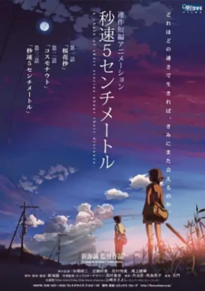

“They say it's five centimeters per second. The speed of a falling cherry petal. Five centimeters per second.”
5 Centimeters per Second

5 Centimeters per Second (Japanese: 秒速5センチメートル, Hepburn: Byōsoku Go Senchimētoru) is a 2007 Japanese animated coming-of-age romantic drama film written and directed by Makoto Shinkai. The film consists of three segments in triptych style, each following a period in the life of the protagonist Takaki Tōno and his relationships with the girls around him. It theatrically premiered in Japan on 3 March 2007.
How good it is
The film was awarded Best Animated Feature Film at the 2007 Asia Pacific Screen Awards. It received a novelization in November 2007 and a manga adaptation illustrated by Seike Yukiko in 2010.
Main Plot
The story is set in Japan, beginning in the early 1990s up until the present day (2008), with each act centered on a boy named Takaki Tōno.
Characters
- Takaki Tōno (遠野 貴樹, Tōno Takaki)
- Takaki is the main character of the film. Because of his parents' jobs, he is forced to move frequently. He and Akari become close friends, but when Akari moves away, they end up attending different junior high schools. In the second arc, he is shown to be an apt kyūdō practitioner and a member of his school's kyūdō club.
- Akari Shinohara (篠原 明里, Shinohara Akari)
- Takaki's best friend and love interest in elementary school. Like Takaki, she and her family move a lot. After elementary school, she moves to Iwafune. She suggests living with her aunt in Tokyo in order to stay with Takaki, but her parents forbid this. For a while, she and Takaki keep in touch via post.
- Kanae Sumida (澄田 花苗, Sumida Kanae)
- Armin ArlertA classmate of Takaki in junior high school and high school. She has been in love with Takaki since he began attending her junior high school, but cannot express her feelings to him. Kanae loves to surf and rides a moped to school. She does not know what she wants to do with her future. Her older sister is a teacher at her high school. In the manga, she is seen working as a nurse after the events depicted in the film.
Source for this site
Production
Makoto Shinkai has expressed that, unlike his past works, there would be no fantasy or science fiction elements in this film. Instead, the feature film would attempt to present the real world from a different perspective. Shinkai's film gives a realistic view of the struggles many people have to face: time, space, people, and love. The title 5 Centimeters per Second comes from the speed at which cherry blossom petals fall, with petals being a metaphorical representation of humans, reminiscent of the slowness of life and how people often start together but slowly drift into their separate ways. The movie marks the first time Shinkai has worked closely with a full staff of animators and artists.